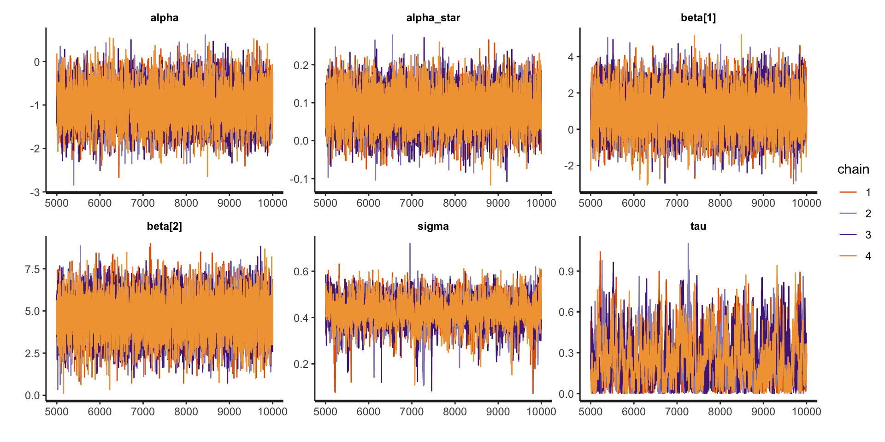
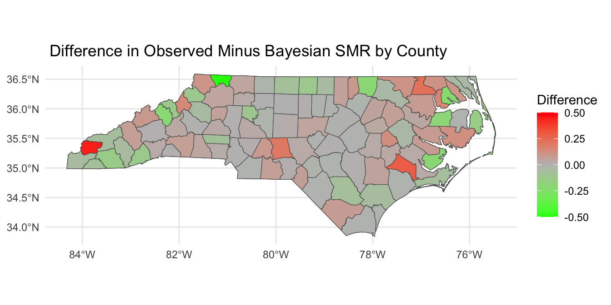
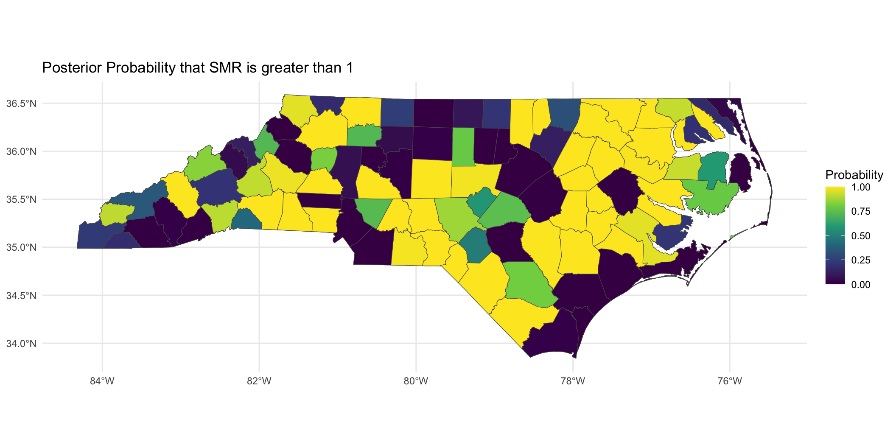

neighbors <- spdep::poly2nb(covid_nc_2020) # computes the neighborhood structure
W <- spdep::nb2mat(neighbors, style = "B", zero.policy = TRUE) # converts to an n x n matrixDisease Mapping
Review of last week
Last week, we learned about Gaussian processes.
We learned how to apply Gaussian processes to longitudinal (or time-series) and geospatial data.
Focused on making predictions at new locations across the spatial surface.
Today we will focus on areal spatial data, which has different goals associated with it than point-referenced spatial data.
Lattice Data (Areal Data)
Data observed at the level of an areal unit
- County Level Sudden Infant Death Syndrome Counts

Lattice Data (Areal Data)
- Birmingham Tract Level Poverty Levels

Goals of Areal Spatial Data Analysis
The goal of areal spatial data analysis is to understand how spatial patterns (e.g., mortality rates, disease incidence) vary across different geographic areas (e.g., counties, neighborhoods).
It helps us identify:
Clusters: Areas with similar characteristics (e.g., high mortality, disease prevalence).
Outliers: Areas that deviate significantly from the overall pattern (e.g., unexpectedly high mortality rates).
Spatial Dependence: Whether values in one area are correlated with values in nearby areas (e.g., neighboring counties with similar health outcomes).
Why We Care About Spatial Patterns
Local Insights: Spatial analysis helps identify local variations in health outcomes that may not be apparent when analyzing data at a higher (e.g., state or national) level.
Targeted Interventions: Understanding spatial patterns allows for targeted public health interventions tailored to regions that need attention (e.g., areas with unusually high mortality rates).
Identifying Spatial Clusters: By recognizing clusters of high or low rates, we can investigate potential common causes (e.g., environmental factors, access to healthcare, socioeconomic conditions).
Motivating Data
Today, we will motivate areal spatial data analysis and disease mapping by studying 2020 COVID mortality at the county-level in North Carolina. The data object covid_nc_2020 is an sf object.
Variables are:
name: county name.population: 2020 population.obs_deaths: observed number of COVID-related deaths in 2020.est_deaths: estimated number of COVID-related deaths in 2020.smr: standardized mortality ratio.age: precentage of residents over 60 years of age.poverty: percentage of residents below the poverty line.geometry: contains centroid and boundary information for each county.
COVID Mortality

Introduction to Disease Mapping
Disease mapping is a way of visualizing and analyzing geographic variations in health outcomes, such as mortality or disease incidence, across different regions (e.g., counties or neighborhoods).
It helps us identify regions with unusually high or low health outcomes, which could be indicative of underlying health disparities.
The Challenge with Observed Data
Imagine you want to compare the number of deaths across counties in a state, like North Carolina. If we simply look at observed death counts, we might be misled:
Larger counties with more people may have more deaths simply due to their larger population.
Smaller counties may appear “healthier” simply because they have fewer people, not because they have lower mortality rates.
Thus, observed death counts are not enough to draw meaningful comparisons.
The Challenge with Observed Data
To make fair comparisons between regions of different sizes, we need to adjust for population size (and sometimes demographics).
Without these adjustments, it’s hard to determine if a county’s high death count is due to its population size or if there’s something unique about the county (e.g., healthcare access, environmental factors) that increases the risk of mortality.
This is where we need more nuanced measures to adjust for population size and allow for better comparisons.
Today we will talk about the standardized mortality ratio (SMR).
Standardized Mortality Ratio
SMR is a way of comparing the observed number of deaths in a population to the number of deaths we would expect, given the population’s characteristics (such as population size).
It adjusts for differences in population, allowing us to identify areas where deaths are higher or lower than we would expect.
\[\text{SMR} = \frac{\text{Observed Deaths}}{\text{Expected Deaths}}\]
- Expected Deaths is calculated by multiplying the total deaths across the state by the proportion of the population in that county.
Example Data
| County | Observed Deaths | Population | Population Proportion |
|---|---|---|---|
| County A | 10 | 30,000 | 0.3 |
| County B | 15 | 50,000 | 0.5 |
| County C | 5 | 20,000 | 0.2 |
| Total | 30 | 100,000 | 1.0 |
Step 1 - Calculate Expected Deaths
The Expected Deaths for each county are calculated by multiplying the total deaths by the population proportion for that county:
\[\begin{aligned} \text{Expected Deaths for County A} = 30 \times 0.3 &= 9\\ \text{Expected Deaths for County B} = 30 \times 0.5 &= 15\\ \text{Expected Deaths for County C} = 30 \times 0.2 &= 6 \end{aligned}\]
Step 2 - Compute SMR
Now, we calculate the SMR by dividing the observed deaths by the expected deaths:
\[\begin{aligned} \text{SMR for County A} &= \frac{10}{9} = 1.11\\ \text{SMR for County B} &= \frac{15}{15} = 1\\ \text{SMR for County C} &= \frac{5}{6} = 0.83 \end{aligned}\]
What do these numbers mean?
Interpreting SMR
SMR = 1: The observed number of deaths matches the expected number of deaths.
SMR > 1: More deaths than expected (excess mortality).
SMR < 1: Fewer deaths than expected (lower mortality).
In our example:
County A has excess mortality, with SMR of 1.11.
County B has as many deaths as expected, with SMR of 1.
County C has fewer deaths than expected, with SMR of 0.83.
Why Use SMR in Disease Mapping?
SMR allows us to:
Make meaningful comparisons across counties of different sizes.
Identify areas with excess mortality (SMR > 1) and areas with lower-than-expected mortality (SMR < 1).
In disease mapping, SMR helps us better understand spatial health disparities and identify regions that may need targeted public health interventions.
Standardized Mortality Ratios

Writing down a model for SMR
Define \(Y_i\) and \(E_i\) as the observed and expected mortality counts at county \(i\) (\(i = 1\ldots,n\)). We can model the observed counts as follows:
\[Y_i | \lambda_i \stackrel{ind}{\sim} \text{Poisson}(E_i \lambda_i).\]
Recall that for a random variable \(Y \sim \text{Poisson}(\lambda)\), \(\mathbb{E}[Y] = \lambda\) and \(\mathbb{V}(Y) = \lambda\).
We have: \(\mathbb{E}[Y_i | \lambda_i] = E_i \lambda_i \implies \mathbb{E}\left[(Y_i / E_i) | \lambda_i\right] = \lambda_i.\)
- Under this parameterization \(\lambda_i\) is the SMR.
Disease Mapping Model
The parameter \(\lambda_i\), sometimes also called relative risk, is modeled as follows:
\[\begin{aligned} Y_i | \lambda_i &\stackrel{ind}{\sim} \text{Poisson}(E_i \lambda_i)\\ \log \lambda_i &= \alpha + \mathbf{x}_i \boldsymbol{\beta} + \theta_i + \epsilon_i, \quad \epsilon_i \stackrel{iid}{\sim} N(0,\sigma^2) \end{aligned}\]
where \(\mathbf{x}_i \in \mathbb{R}^{p \times 1}\) contains county-level predictors.
Population parameters:
\(\alpha \in \mathbb{R}\) is a population intercept.
\(\boldsymbol{\beta} \in \mathbb{R}^p\) is a vector of population coefficients.
\(\sigma \in \mathbb{R}^+\) is a residual error term.
Disease Mapping Model
The parameter \(\lambda_i\), sometimes also called relative risk, is modeled as follows:
\[\begin{aligned} Y_i | \lambda_i &\stackrel{ind}{\sim} \text{Poisson}(E_i \lambda_i)\\ \log \lambda_i &= \alpha + \mathbf{x}_i \boldsymbol{\beta} + \theta_i + \epsilon_i,\quad \epsilon_i \stackrel{iid}{\sim} N(0,\sigma^2) \end{aligned}\]
Spatial Error Term:
\(\theta_i \in \mathbb{R}\) is a location-specific parameter that smooths data according to a neighborhood structure.
\(\theta_i\) induces spatial correlation, such that \(\lambda_i\) in neighboring areas will be more similar.
Spatial Correlation: Areal Data
How to induce spatial correlation between areal units?
Distances between centroids (possibly population weighted); may be inappropriate for oddly shaped regions of varying sizes (great for equal sized grid though).
Neighborhood structure of your spatial region; are two regions neighbors?
Correlation introduced through spatial random effects.
The default model for areal data in the Bayesian setting is called the conditionally autoregressive (CAR) model.
Adjacency Matrix
We will define the matrix \(\mathbf{W} \in \mathbb{R}^{n \times n}\) as the adjacency matrix.
- This is sometimes called a proximity matrix or neighborhood matrix.
Each entry (\(w_{ij} = [\mathbf{W}]_{ij}\)) is given by: \[w_{ij} = 1(i \sim j) = \left\{ \begin{array}{ll} 1 & \mbox{if $i$ and $j$ share a border};\\ 0 & \mbox{otherwise}.\end{array} \right.\]
In some cases, \(w_{ij}\) can be generalized to be non-binary.
Compute Adjacency Matrix
To compute the adjacency matrix of an sf data object we can use the spdep library.
style = "B"specifies binary encoding (1 if neighbors, 0 if not).zero.policy = TRUEensures the function works even if some counties do not have neighbors.
Visualzing the Adjacency Matrix

Visualzing the Adjacency Matrix

ICAR Model
Today, we will look at the intrinsic CAR (ICAR) process for a vector \(\boldsymbol{\theta} = (\theta_1, \ldots, \theta_n)^\top\), \(\boldsymbol{\theta} | \tau^2 \sim \text{ICAR}\left(\tau^2\right)\). Under this specification, the following joint distribution is given:
\[f(\boldsymbol{\theta} | \tau^2) \propto \exp\left\{-\frac{1}{2\tau^2}\boldsymbol{\theta}^\top \left(\mathbf{D}_w - \mathbf{W}\right) \boldsymbol{\theta}\right\},\]
where \(\mathbf{D}_w\) is diagonal with \([\mathbf{D}_w]_{ii} = w_{i+}\) and \(w_{i+} = \sum_{j=1}^n w_{ij}\) (i.e., \(w_{i+}\) is the number of neighbors for locations \(i\)).
\(\left(\mathbf{D}_w - \mathbf{W}\right)\) is singular, so \(\left(\mathbf{D}_w - \mathbf{W}\right)^{-1}\) does not exist and this distribution is improper.
We can still use this as a prior for \(\boldsymbol{\theta}\) and get a proper posterior!
ICAR Model: Conditional Distributinos
The joint distribution on the previous slide can be written as a \(n\) conditional distributions:
\[\theta_{i} | \boldsymbol{\theta}_{-i}, \tau^2 \sim N \left({\frac{\sum_{j=1}^n w_{ij}\theta_{j}}{w_{i+}}},\frac{\tau^2}{w_{i+}}\right)\]
\(\boldsymbol\theta_{-j}\): Vector of \(\theta_{i}\) parameters with \(\theta_{j}\) removed.
The mean is an average of the neighbors values.
The variance shrinks as a function of the number of neighbors.
Another Equivalent Specification
Pairwise difference specification:
\[f(\boldsymbol{\theta} | \tau^2) \propto \exp\left\{-\frac{1}{2\tau^2}\sum_{i \sim j} w_{ij} (\theta_i - \theta_j)^2\right\},\]
The impropriety of the distribution can also be seen here, because we can add any constant to all \(\theta_i\) and the distribution is unaffected.
A constraint such as \(\sum_{i=1}^n \theta_i = 0\) would provide the needed centering.
We will use this specification in Stan.
Full Disease Mapping Model
The full model can be written as:
\[\begin{aligned} Y_i | \lambda_i &\stackrel{ind}{\sim} \text{Poisson}(E_i \lambda_i)\\ \log \lambda_i &= \alpha + \mathbf{x}_i \boldsymbol{\beta} + \theta_i + \epsilon_i,\quad \epsilon_i \stackrel{iid}{\sim} N(0,\sigma^2)\\ \boldsymbol{\theta} | \tau &\sim \text{ICAR}\left(\tau^2\right)\\ \boldsymbol{\Omega} &\sim f(\boldsymbol{\Omega}),\\ \end{aligned}\]
where \(\boldsymbol{\Omega} = (\alpha, \boldsymbol{\beta}, \sigma, \tau)\).
- \(\mu_i = \exp\{\log E_i + \alpha + \mathbf{x}_i\boldsymbol{\beta} + \theta_i + \epsilon_i\}\).
Posterior Distribution
Define \(\mathbf{Y} = (Y_1,\ldots,Y_n)\). The posterior can be written as:
\[\begin{aligned} f(\boldsymbol{\Omega}, \boldsymbol{\theta} | \mathbf{Y}) &\propto f(\mathbf{Y}, \boldsymbol{\Omega},\boldsymbol{\theta})\\ &\propto f(\mathbf{Y} | \boldsymbol{\Omega},\boldsymbol{\theta}) f(\boldsymbol{\theta} | \boldsymbol{\Omega}) f(\boldsymbol{\Omega})\\ &\propto f(\boldsymbol{\Omega}) \prod_{i=1}^n f({Y}_i | \lambda_i) f(\theta_i | \tau^2) . \end{aligned}\]
Adding the ICAR prior to Stan
We will use the pairwise differences specification, so we need the unique pairs of neighbors. We will define \(n_{edges}\) as the number of non-zero edges. The following is added to the Stan data code chunk.
data {
int<lower=0> n;
int<lower=0> n_edges;
array[n_edges] int<lower = 1, upper = n> node1; // node1[i] adjacent to node2[i]
array[n_edges] int<lower = 1, upper = n> node2; // and node1[i] < node2[i]
...
}Extracting non-zero edges for Stan
Our goal is to get the row-column pairs from \(\mathbf{W}\) where the \(w_{ij} = 1\). This will return all non-zero indices in the adjacency matrix.
neighbor_pairs <- which(W == 1, arr.ind = TRUE)Since \(\mathbf{W}\) is symmetric, we only need to keep the edges from above the diagonal to avoid repeating edges.
neighbor_pairs_lower <- neighbor_pairs[neighbor_pairs[, 1] < neighbor_pairs[, 2], ]
n_edges <- nrow(neighbor_pairs_lower)
node1 <- neighbor_pairs_lower[, 1]
node2 <- neighbor_pairs_lower[, 2]Adding the ICAR prior to Stan
We can then add the following to the parameters and model Stan code chunks, where we leverage Stan’s ability to perform multi-indexing and vectorization!
parameters {
vector[n] z;
}
transformed parameters {
vector[n] theta = tau * z;
}
model {
target += -0.5 * dot_self(z[node1] - z[node2]);
// soft sum-to-zero constraint on z,
// equivalent to mean(z) ~ normal(0,0.01)
sum(z) ~ normal(0, 0.01 * n);
}Non-centered parameterization
In Stan it is more computationally efficient to use a non-centered parameterization. We define, \(\mathbf{z} \in \mathbb{R}^n\) and give it the following prior:
\[\mathbf{z} \sim \text{ICAR}(\tau^2 = 1), \quad \sum_{i=1}^n z_i = 0.\]
We can then recover \(\boldsymbol{\theta}\) by computing \(\boldsymbol{\theta} = \tau \mathbf{z}.\)
Modeling
We specify the following model:
\[\begin{aligned} Y_i | \lambda_i &\stackrel{ind}{\sim} \text{Poisson}(E_i \lambda_i)\\ \log \lambda_i &= \alpha + \mathbf{x}_i \boldsymbol{\beta} + \theta_i + \epsilon_i,\quad \epsilon_i \stackrel{iid}{\sim} N(0,\sigma^2)\\ \boldsymbol{\theta} | \tau &\sim \text{ICAR}\left(\tau^2\right)\\ \alpha^* &\sim N(0,3^2)\\ \beta_j &\sim N(0,3^2), \quad j = 1,\ldots,p\\ \sigma &\sim \text{Half-Normal}(0, 3^2)\\ \tau &\sim \text{Half-Normal}(0, 3^2)\\ \end{aligned}\]
Where \(n = 100\), \(\mathbf{x}_i = (\text{age}_{i}, \text{poverty}_i)\).
Full Stan Model for ICAR
// saved in icar.stan
data {
int<lower = 1> n;
int<lower = 1> p;
int<lower = 0> n_edges;
array[n_edges] int<lower = 1, upper = n> node1; // node1[i] adjacent to node2[i]
array[n_edges] int<lower = 1, upper = n> node2; // and node1[i] < node2[i]
array[n] int<lower = 0> Y;
vector<lower = 0>[n] E;
matrix[n, p] X;
}
transformed data {
matrix[n, p] X_centered;
row_vector[p] X_bar;
for (i in 1:p) {
X_bar[i] = mean(X[, i]);
X_centered[, i] = X[, i] - X_bar[i];
}
vector[n] logE = log(E);
}
parameters {
real alpha_star;
vector[p] beta;
real<lower = 0> sigma; // precision of heterogeneous effects
real<lower = 0> tau; // precision of spatial effects
vector[n] z1; // spatial effects
vector[n] z2; // heterogeneous effects
}
transformed parameters {
vector[n] theta = tau * z1; // spatial effects
vector[n] epsilon = sigma * z2; // heterogeneous effects
}
model {
Y ~ poisson_log(logE + alpha_star + X_centered * beta + theta + epsilon);
// the following computes the ICAR prior on theta (through the standardized version z1)
target += -0.5 * dot_self(z1[node1] - z1[node2]);
// soft sum-to-zero constraint on theta)
sum(z1) ~ normal(0, 0.001 * n); // equivalent to mean(z1) ~ normal(0, 0.001)
// heterogeneous effects
z2 ~ std_normal();
// population parameters
alpha_star ~ normal(0, 3);
beta ~ normal(0, 3);
sigma ~ normal(0, 3);
tau ~ normal(0, 3);
}
generated quantities {
real alpha = alpha_star - X_bar * beta;
vector[n] log_mu = logE + alpha_star + X_centered * beta + theta + epsilon;
vector[n] lambda = exp(log_mu - logE);
vector[n] mu = exp(log_mu);
vector[n] Y_pred;
vector[n] log_lik;
for (i in 1:n) {
Y_pred[i] = poisson_log_rng(log_mu[i]);
log_lik[i] = poisson_log_lpmf(Y[i] | log_mu[i]);
}
}Fit the Stan Model
X <- model.matrix(~ age + poverty, data = covid_nc_2020)[, -1]
stan_data <- list(
n = nrow(covid_nc_2020),
p = ncol(X),
n_edges = nrow(neighbor_pairs_lower),
node1 = neighbor_pairs_lower[, 1],
node2 = neighbor_pairs_lower[, 2],
Y = covid_nc_2020$obs_deaths,
E = covid_nc_2020$est_deaths,
X = X
)
icar <- stan_model("icar.stan")
fit_icar <- sampling(icar, stan_data, pars = c("z1", "z2", "epsilon", "log_mu", "lp__"), include = FALSE, iter = 10000)Examine model summaries
print(fit_icar, pars = c("alpha", "alpha_star", "beta", "sigma", "tau"))Inference for Stan model: anon_model.
4 chains, each with iter=10000; warmup=5000; thin=1;
post-warmup draws per chain=5000, total post-warmup draws=20000.
mean se_mean sd 2.5% 25% 50% 75% 97.5% n_eff Rhat
alpha -0.99 0.01 0.42 -1.81 -1.27 -0.99 -0.71 -0.17 6567 1
alpha_star 0.08 0.00 0.05 -0.01 0.05 0.08 0.12 0.18 6187 1
beta[1] 0.99 0.01 1.05 -1.06 0.28 0.99 1.70 3.06 5966 1
beta[2] 4.66 0.01 1.13 2.40 3.92 4.67 5.43 6.86 6293 1
sigma 0.42 0.00 0.06 0.30 0.39 0.43 0.46 0.53 1087 1
tau 0.25 0.01 0.17 0.01 0.11 0.22 0.36 0.64 550 1
Samples were drawn using NUTS(diag_e) at Fri Mar 21 15:37:56 2025.
For each parameter, n_eff is a crude measure of effective sample size,
and Rhat is the potential scale reduction factor on split chains (at
convergence, Rhat=1).Examine traceplots
rstan::traceplot(fit_icar, pars = c("alpha", "alpha_star", "beta", "sigma", "tau"))
Looking at SMR observed versus \(\lambda_i\)

Posterior SMR Across North Carolina



Mapping \(P(\lambda_i > 1 | \mathbf{Y})\)

Mapping \(P(\lambda_i > 1 | \mathbf{Y})\)
Binary indicator of \(P(\lambda_i > 1 | \mathbf{Y}) > 0.95\):

Prepare for next class
Work on HW 05, which is due April 8.
Complete reading to prepare for next Thursday’s lecture
Thursday’s lecture: Guest lecture by Prof. Hwanhee Hong on Bayesian Meta-Analysis